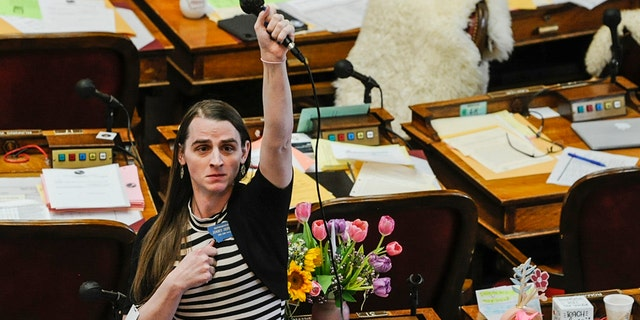

Zooey Zephyr's Story:
26 April 2023

Image Credit: Associated Press
Zooey Zephyr's story reminds us that decorum, also known as the rule of "playing nice" in politics, is a tool of oppression.
The rule of decorum is oppressive because the "appropriateness of behavior or conduct" in our society is defined by rigid norms. For example, it is clear from the recent efforts of Montana Republicans to ban gender-affirming care and silence trans representative Zooey Zephyr that Montana Republicans do not find trans people—the expression of our identities, our presence in public spaces, our very existence—appropriate. From the recent onslaught of anti-trans and anti-LGBTQ legislation, and especially Republican efforts to take trans kids away from their parents in Florida and force trans adults to detransition in Missouri, it is clear that many Republicans across the country feel the same way. They are actively working to eradicate the existence of trans people, to force us back into the closet, to silence our voices.
What do we have to gain from "playing nice" with people who would rather we did not exist? When we conform to the "appropriateness of behavior" that rules over spaces like the Montana House of Representatives, we are complicit and participating in our own destruction, embracing a definition of "appropriate" that says our identities, and with our identities our lives, should die. For Zooey Zephyr and her constituents, speaking out against Bill 99 is a matter of survival.
All Zooey Zephyr said in the first place—the words for which she was banned today from the Montana House floor—is that Republicans have blood on their hands. In her remarks, she clarified her first-hand experience of the damages of Republicans' efforts in Montana. She said: "I have had friends who have taken their lives because of these bills. I have fielded calls from families in Montana, including one family whose trans teenager attempted to take her life while watching a hearing on one of the anti-trans bills...When I rose up and said there was blood on your hands, I was not being hyperbolic. I was speaking to the real consequences of the votes that we as legislators take in this body."
As a non-binary person who has struggled all my life with the way I am perceived by others, who has taught and worked closely with young people in the same position, who has many trans loved ones and who has paid close attention to the growing violence against trans people, I understand deep in my bones what Zooey means when she says this is a matter of life and death. I also appreciate the immense strength it must take to try to explain to Republicans that making the existence of trans people illegal has and will continue to result in physical, mental, emotional, spiritual, and psychological harm.
Montana Republicans expelled Zooey because they do not want to confront the reality, the gravity, of murder. And they are also afraid to confront their own identities, their position in society as the conservators of an American culture where ownership over other people's bodies is a norm. It is the same force of deeply-rooted fear, denial, and entitlement to controlling the bodies of others that has recently led Republicans to expel the Tennessee three, censure Mauree Turner, criminalize reproductive healthcare, legalize the removal of trans children from their parents while permitting their exploitation for cheap labor, and prevent teachers from discussing race in schools.
Centrists also ask us to play nice, to reason with the doctrine that marginalized people should exist only as far as they are able to uphold capitalism and social hierarchies—that our identities and cultures should be invisible, owned, and controlled. We are given the insurmountable task of using logic to argue against our existential extermination, against the idea that we should be silent in our struggle to survive, even when we are democratically elected to speak on it. And according to Montana Republicans, we should do all of this without asking people to confront the lived consequences of their actions, to recognize the depth and richness of our identities and self-expression, to acknowledge our humanity.
Zooey Zephyr's refusal to flatten her constituents' experiences into polite decorum—all of our refusal to remain quiet in the face of life-destroying legislation, rhetoric, and violence—is the only way forward. If Zooey had apologized, the legislation would have passed quietly and become yet another statistic in the pool of over 500 recent anti-trans bills. With Zooey's voice, Bill 99 will probably still pass, but it will not pass quietly. People all over the country are watching Montana, are watching Tennessee and Florida and Missouri. They are listening to our voices and recognizing that gender-affirming care, reproductive care, mental health care, gun control, police violence, and public education are more than political issues: they are a matter of life and death for so many people.
Consider this our cue to stop pretending that polite political negotiation is going to change Republicans' minds. Instead, Zooey reminds us that rebellious, indecorous voices are powerful. We can express support for Zooey and send a message that trans people do and should continue to exist—that we should protect trans peoples' existence. We can work to create spaces in our communities where all people are safe from legalized violence. And finally, we can vote like our lives depend on it.